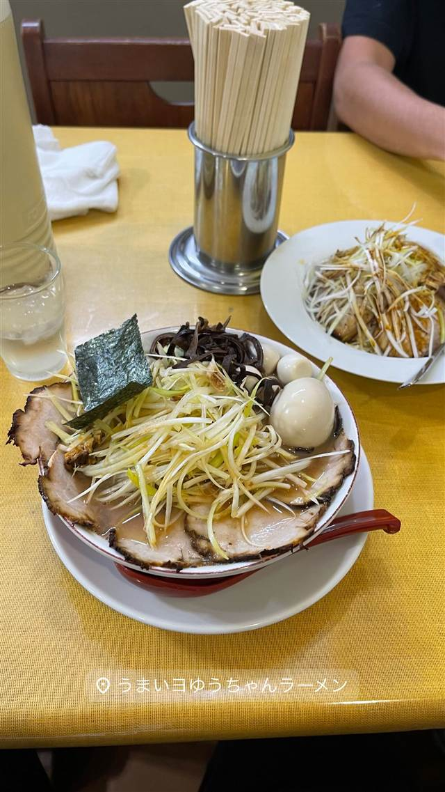
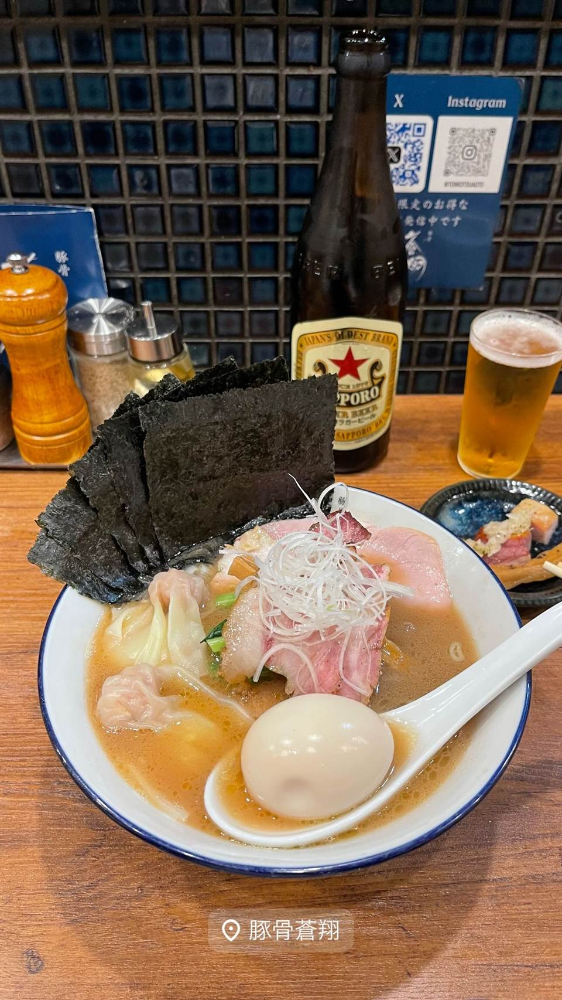
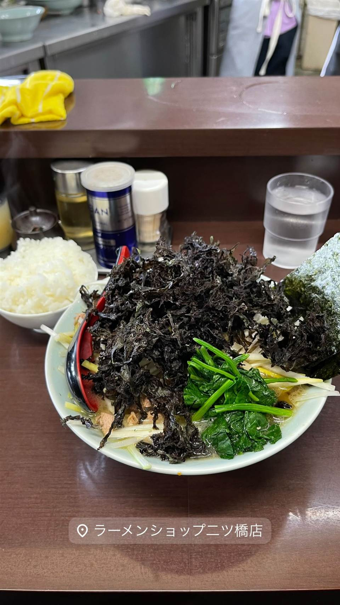
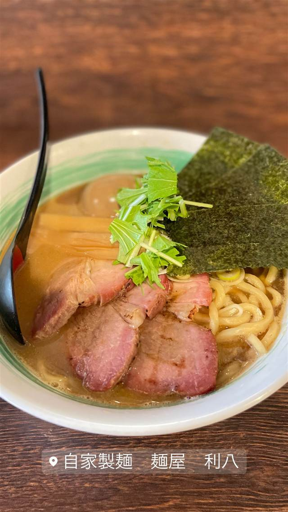
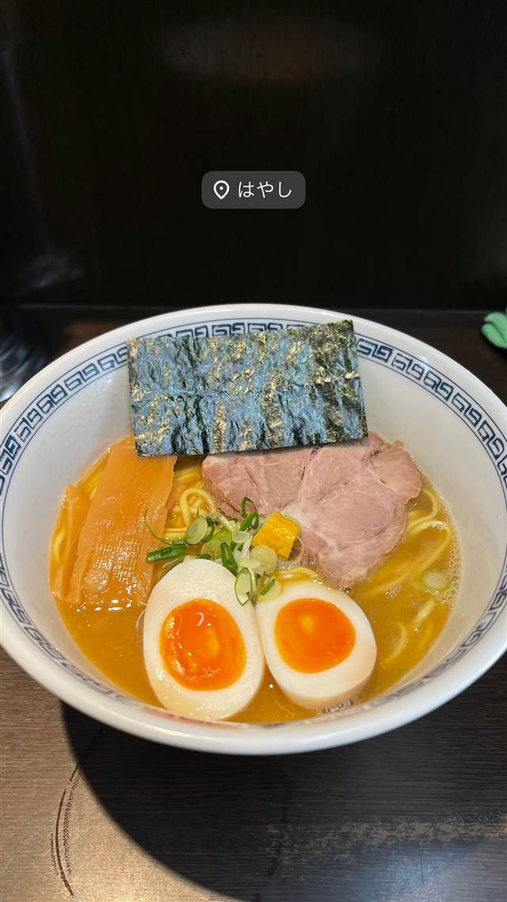
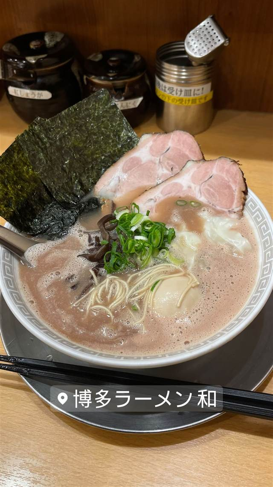

ラーメン · 豚骨 · 大和
うまいヨ ゆうちゃんラーメン
TRYとんこつ3年連続王者の「どっ豚骨」ラーメン
うまいヨゆうちゃんラーメン
横浜家系の名店「壱六家」でスープ作りを学んだ千葉雄一氏が2014年に神奈川・大和で独立した豚骨ラーメン店。看板の「どっ豚骨」は、九州の濃厚な「ど豚骨」をさらに超えたいという思いを込めた造語で、TRYラーメン大賞を3年連続受賞するほどの実力からマルちゃんのカップ麺にもなっている。
TRIVIA
豆知識
- 「どっ豚骨」の名は、福岡で言う濃厚な「ど豚骨」をさらに超えたいという店主の思いから命名された
- 人気の高さから東洋水産（マルちゃん）によりカップ麺化されている
REVIEWS
世間の評判
96.1ラーメンDB3.77食べログ
値上げ後もブレない豚骨の実力
- 値上げ後にトッピングが簡略化され海苔中心になったとの声がある
- 濃厚な豚骨スープと極太のシコシコ麺の相性の良さを評価する声が多い
- 味が濃いめで塩っぱいと感じる人もいる一方チャーハンを勧める声もある
ラーメンデータベース 口コミ279件・総合204位・最新 2026-06
| 創業 | 2014年12月、神奈川県大和市にオープン。 |
|---|---|
| 系譜 | 店主・千葉雄一氏は横浜家系ラーメンの名店「壱六家」出身で、スープ担当として腕を磨いたのち独立した。 |
| 看板 | どっ豚骨ラーメン |
| こだわり | 豚頭や豚足など複数の部位を2つの羽釜で長時間炊き上げる製法で、濃厚な旨みのスープに仕上げる。 |
| 掲載・評価 | TRYラーメン大賞のとんこつ部門で2020-21年〜2022-23年の3年連続1位を獲得し「TRYとんこつ4冠」と呼ばれる。 |
| どこから | 東京から1時間ほど |
| 行くなら | 行列 |
| 営業時間 | 月・火 11:00-20:30 水・木 休み 金〜日 11:00-20:30 |
| 予算 | 夜 ¥2,000～¥2,999 |
| 定休日 | 水曜 |
| 場所 | 大和駅 神奈川県大和市上草柳 |
| メモ | 大和駅からアクセスでき、行列ができる人気店。 |
食べたもの：ネギラーメン
NEARBY
近い店・同じ系統の店
-

★ 豚骨 東高円寺駅 豚骨 蒼翔 クラウドファンディングで開業、鶏を使わない家系風豚骨 昼 ¥1,000～¥1,999 夜 ¥1,000～¥1,999 -

★ 豚骨 三ツ境駅 ラーメンショップ 二ツ橋店 二郎顔負けの分厚いチャーシューをのせるネギラーメン 昼 ～¥999 夜 ¥1,000～¥1,999 -

★ 豚骨 京急川崎駅 自家製麺 麺屋 利八 1日熟成させた自家製太麺と吊るし焼きチャーシューの鶏白湯 昼 ¥1,000～¥1,999 夜 ¥1,000～¥1,999 -
 ★
豚骨 赤坂見附駅
なかご
豚骨100%なのに透き通る24時間煮込みの純粋豚そば
昼 ¥1,000～¥1,999 夜 ¥1,000～¥1,999
★
豚骨 赤坂見附駅
なかご
豚骨100%なのに透き通る24時間煮込みの純粋豚そば
昼 ¥1,000～¥1,999 夜 ¥1,000～¥1,999
-

豚骨 渋谷 らーめん はやし 元副住職が独学で開いた柚子香る豚骨魚介ラーメン -

豚骨 赤坂 博多ラーメン 和（かず） 創業以来スープ釜を空にせず継ぎ足す呼び戻し製法という独自の豚骨スープを守る 昼 ～¥999 夜 ～¥999